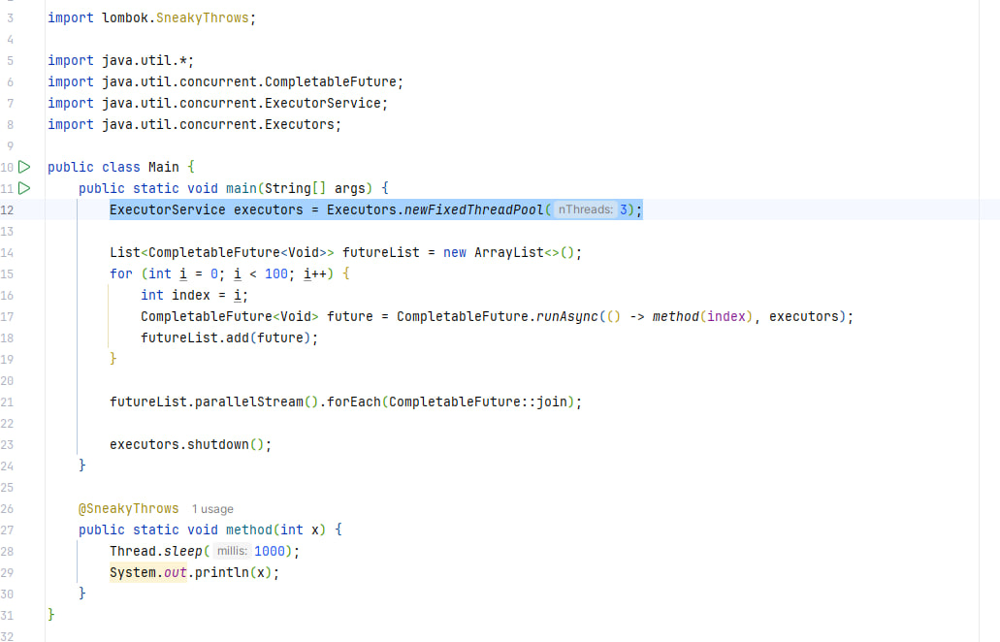
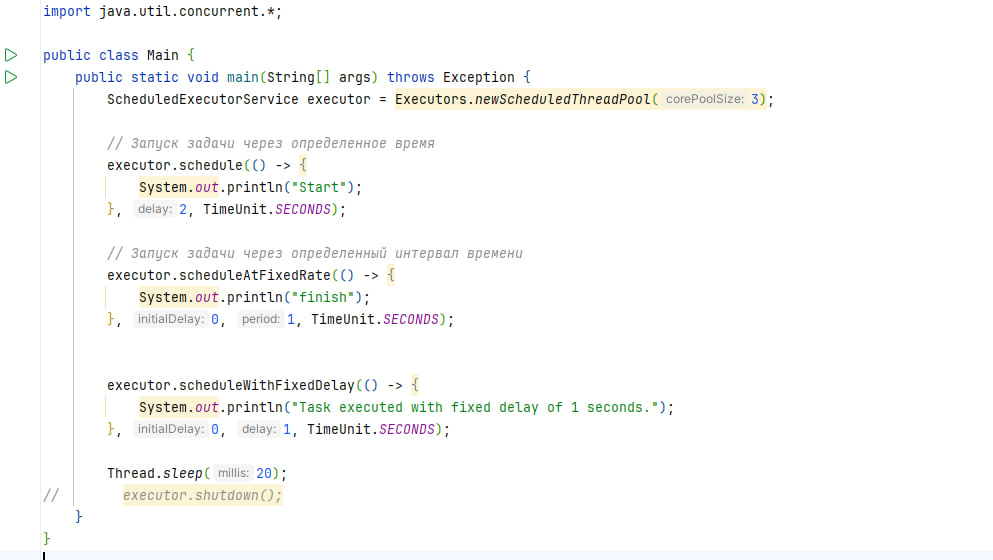

-
FixedThreadPool
- Создает пул потоков фиксированного размера, в котором число потоков не изменяется.
- Каждая задача отправляется на выполнение, как только в пуле освобождается поток.
- Подходит для ситуаций, когда нужно ограничить количество параллельно выполняющихся задач.
-
CachedThreadPool
-
Создает пул потоков, который автоматически увеличивает или уменьшает количество потоков в
зависимости от нагрузки.
- Потоки, которые долго не используются, будут завершены и удалены из пула.
- Подходит для приложений с переменной интенсивностью нагрузки.
-
SingleThreadExecutor
- Создает пул из одного потока.
-
Все задачи выполняются последовательно в единственном потоке, что гарантирует последовательное
выполнение задач.
- Подходит для задач, которые требуют строгой последовательности выполнения.
-
ScheduledThreadPool
-
Создает пул потоков, который поддерживает отложенное выполнение задач и периодическое выполнение
задач в определенные моменты времени.
- Подходит для выполнения задач через определенные интервалы времени или в определенное время.
